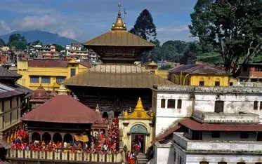
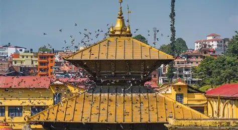
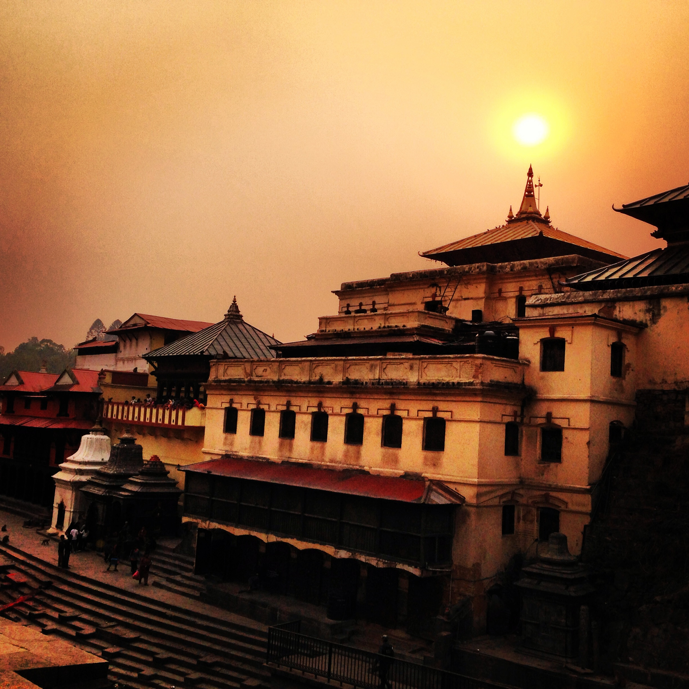
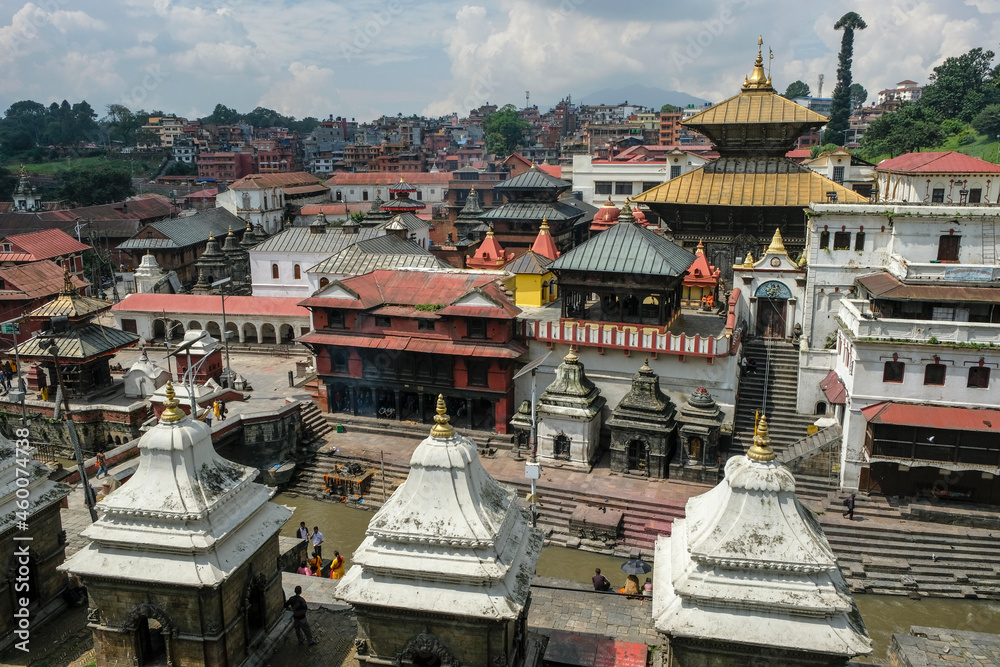
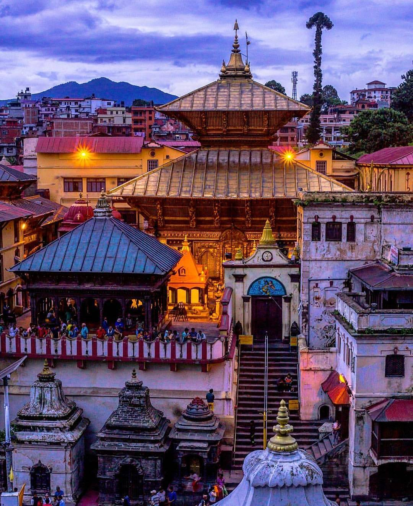

Exploring Pashupatinath Temple
```
Pashupatinath Temple, located in Kathmandu, Nepal, is one of the most sacred Hindu temples dedicated to Lord Shiva.
The temple complex, situated along the Bagmati River, attracts thousands of pilgrims and tourists every year.
Overview
The temple is a UNESCO World Heritage Site and is considered the holiest Hindu shrine in Nepal.
Devotees from Nepal, India, and around the world visit to offer prayers, perform rituals, and participate in festivals.
Activities
- Participate in daily rituals and aarti ceremonies along the Bagmati River
- Witness cremation ceremonies at the temple ghats
- Explore the surrounding temples and ashrams in the complex
- Photography of traditional architecture and cultural events
Major Festivals
- Maha Shivaratri: The biggest festival at Pashupatinath, attracting thousands of devotees
- Ekadashi: Special fasting day celebrated by Hindus
- Other religious occasions: Daily worship, holy baths, and special poojas
Interesting Facts
- The temple is believed to be over 400 years old, though its history goes back much further.
- Non-Hindus are allowed to view the temple only from the opposite bank of the river.
- The main deity of the temple is a lingam representing Lord Shiva.
- The temple architecture features pagoda-style wooden structures with intricate carvings.
Visiting Pashupatinath Temple is a spiritual experience and an opportunity to witness the rich Hindu traditions of Nepal.
Respect for local customs and proper decorum is essential while exploring the sacred grounds.




